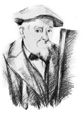

Paul Cezanne (1839-1906) post-izlenimci akımın önemli sanatçılarından biri kabul edilir. Manzaraları ve natürmortları, yirminci yüzyıl başlarında kübizmin ve fovizmin gelişimi üzerinde etkiliydi.
Aix-en-Provence’ta varlıklı bir Fransız ailesinde dünyaya gelen Cezanne başlangıçta memleketinin yakınında hukuk eğitimi gördü. Yakın arkadaş olduğu romancı Emile Zola ile ilk kez orada tanıştı. 1861’de resim için hukuk eğitimini terk eden Cezanne, Güzel Sanatlar Okulu’ndan reddedildiği Paris’e taşındı. Sonra eserleri üzerinde yaşam boyu etkisi olan Camille Pissarro ile tanıştığı İsviçre Akademisi’nde eğitim görmeye başladı. 1874’te Cezanne, Modern Olympia eserini sunduğu ilk bağımsız sergilerinde izlenimcilere katıldı. Giriş eseri, “dizginlenemez romantikliğin” bir eseri olduğu bahanesiyle kavrayışsız bir eleştirmen tarafından çıkarıldı.

Cezanne izlenimcilerle iki kereden fazla sergi yapmasına rağmen, resmî salona hepsi de reddedilen resimlerini sunmaya devam etti. İzlenimcilerin şekil ve yapıyı ihmal ettiklerini eleştiren Cezanne bir arkadaşına, “İzlenimcilikle geçerli ve kalıcı bir şey yapmak istiyorum, tıpkı müzelerdeki sanat eserleri gibi.” diye yazmıştı. Böylece sonraları ‘post-izlenimcilik’ olarak sınıflandırılacak kendi tarzını geliştirdi. Şekilleri basitleştirdi ve gerçekliğin daha doğru bir algısı olduğuna inandığı formu yakalamak üzere perspektifi bozdu. Örneğin Meyve Kâsesi, Bardak ve Elmalar (1879-1882) resminde Cezanne, kâsenin gövdesini, meyvelerin dengesiz ağırlığını destekliyormuş gibi merkezden yana doğru kaydırdı.
1882’de Cezanne, Aix’deki çocukluk evine geri taşındı. Daha sonraki döneminde, konunun önemini azaltarak onun yerine saf şekle yoğunlaştı. Soyutlamaya doğru kendi yolunda yürüyen Cezanne bir mektubunda “Doğada silindiri, küreyi, huniyi görmelisin, hepsi de perspektif içine konmuştur; öyle ki bir cismin, bir düzlemin her tarafı merkezî bir noktadan uzaklaşır.” diye yazdı. 1900’den sonra Mont Sainte-Victoire’nin civarının görüntüsünün, manzaranın nesnel gerçekliğinden ziyade hissi yakalamak için bakış açısını değiştirerek ve renk bloklarını kullanarak bir serisini yaptı.
Cezanne 1906’da öldüğünde, Pablo Picasso Avignonlu Genç Kadınlar (1907) adlı kübik başyapıtına çoktan başlamıştı. Kompozisyonu, Cezanne’a çok şey borçluydu.
EK BİLGİLER:
1. Cezanne, Emile Zola ile arkadaşlığını 1886’da, romancı Fransız gazetesi “Le Figaro”da ressamı başarısızlığa uğramış bir büyük yetenek olarak tarif ettiği zaman bitirdi.
2. Picasso, Cezanne için “hepimizin babası” ifadesini kullanır.